É um hamster macho laranja e branco, animal de estimação de Laura. De tão inocente que é, não nota o amor que a hamster fêmea Bijou sente por ele. Ele gosta muito de brincar e tem uma ótima relação com a Laura e o Brandy, cão da família da Laura. Está sempre pronto para ajudar os seus amigos. O seu melhor amigo é o Oxnard (Fofuxo).
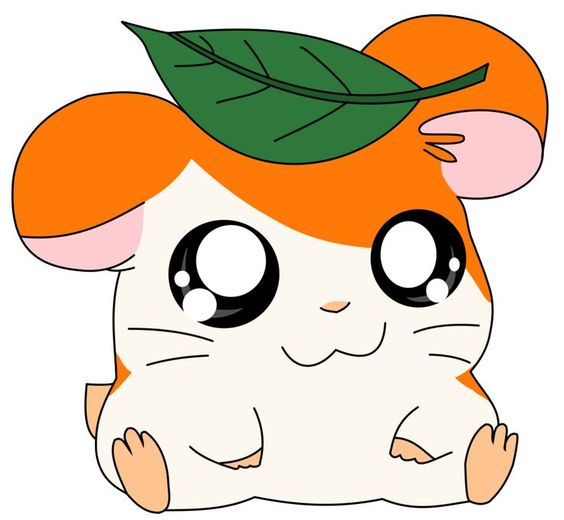É a dona de Hamtaro e uma das protagonistas. Em muito dos episódios os Ham-Ham têm que ajudá-la a escapar de problemas na escola e da vida. Trata muito bem a Hamtaro. É a melhor amiga de Kana (Ana) e é apaixonada pelo Travis (Thiago).
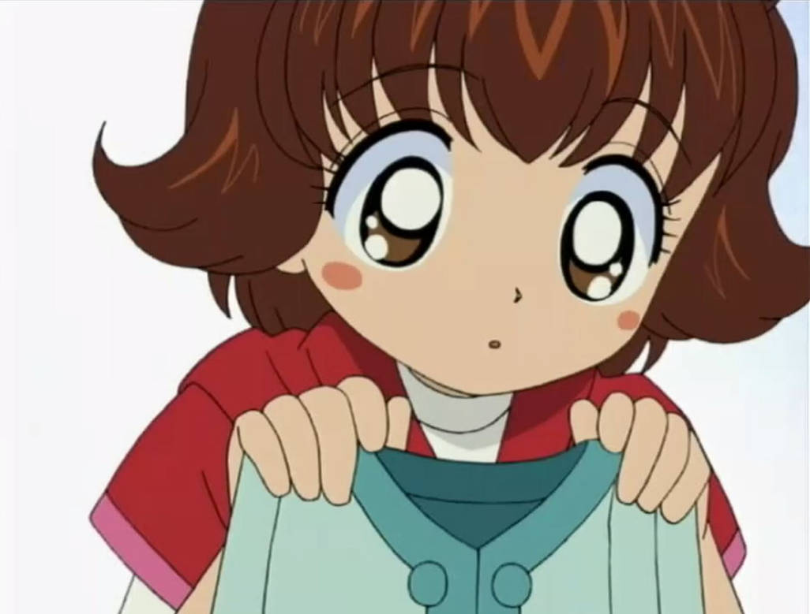É o cão da família da Laura. Passa os dias a dormir na sua casota. Quando o Hamtaro e os outros Ham-Hams precisam de ajuda acorda e usa toda a sua energia para os ajudar, tendo-os salvo por diversas vezes. Sempre que o Hamtaro sai de casa, aterra na cabeça do Brandy (Bóris).
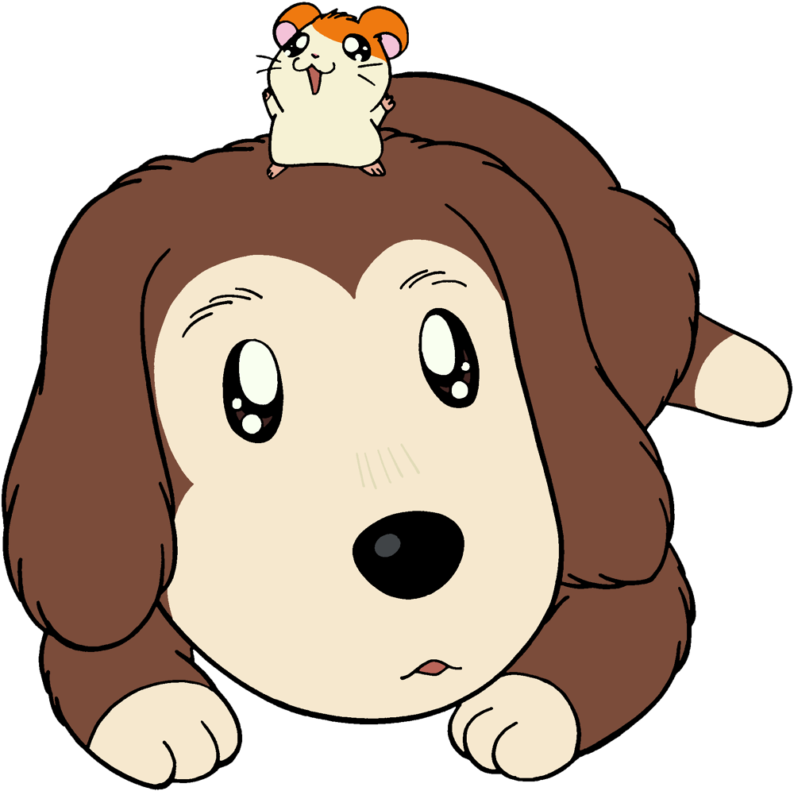Foi o primeiro amigo de Hamtaro, tornando-se o seu melhor amigo. É um hamster comilão e muito brincalhão, mas é desajeitado. É muito medroso, e não larga por nada a sua semente de girassol. Quando a perde fica muito nervoso. Está apaixonado pela Pepper. A sua dona é a Kana (Ana), melhor amiga da Laura (dona do Hamtaro).
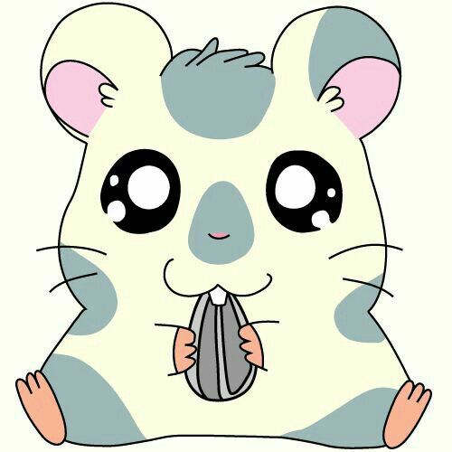É um hamster do campo, sem dono. Fundou o Clube dos Ham-Hams, entitulando-se por isso o chefe dos Ham-Hams. Vive no Clube dos Ham-Hams. É um pouco rude e tem um temperamento difícil, mas corajoso e muito amigo dos seus amigos, sempre disposto a ajudar. Consegue prever o tempo através dos seus bigodes. Está apaixonado pela Bijou, fazendo de tudo para a impressionar. É um escavador de túneis profissional, andando sempre com um capacete amarelo e uma pá na mão.
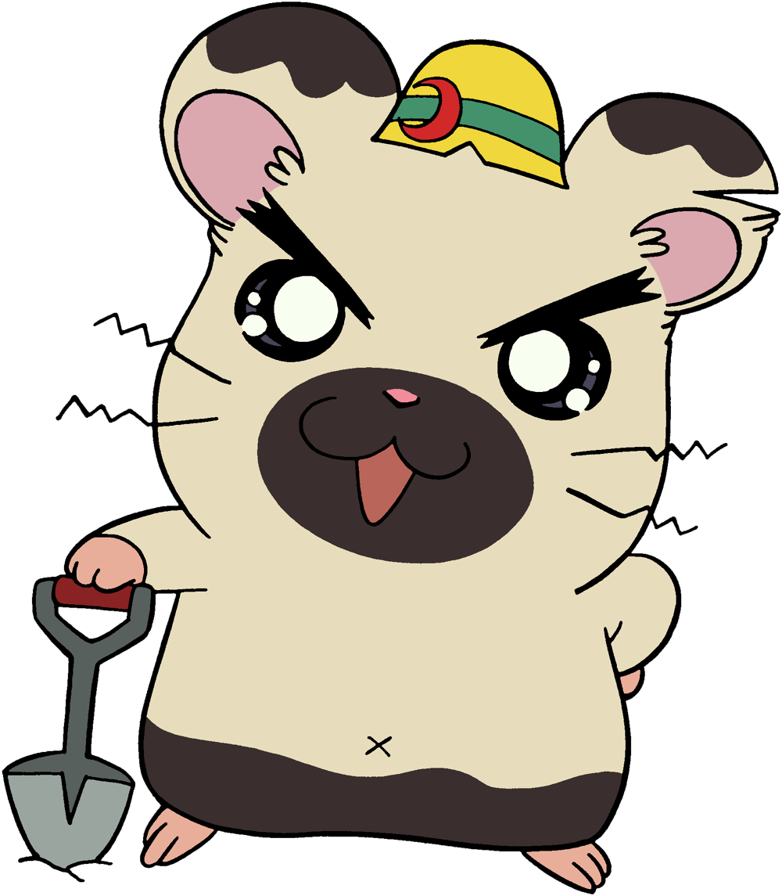É uma hamster fêmea que tem dois totós, cada um atado com um laço azul. Ela adora bastante os seus laços e tem muito cuidado com o seu pelo. Apesar disso não tem problemas em se sujar para ajudar os seus amigos. Mudou-se com a sua dona de França para o Japão, possuindo um sotaque francês. Considera o Boss (Chefe) como o seu irmão mais velho e as suas melhores amigas são a Pashmina e a Sandy. Está apaixonada pelo Hamtaro. A sua dona é a pianista Maria.
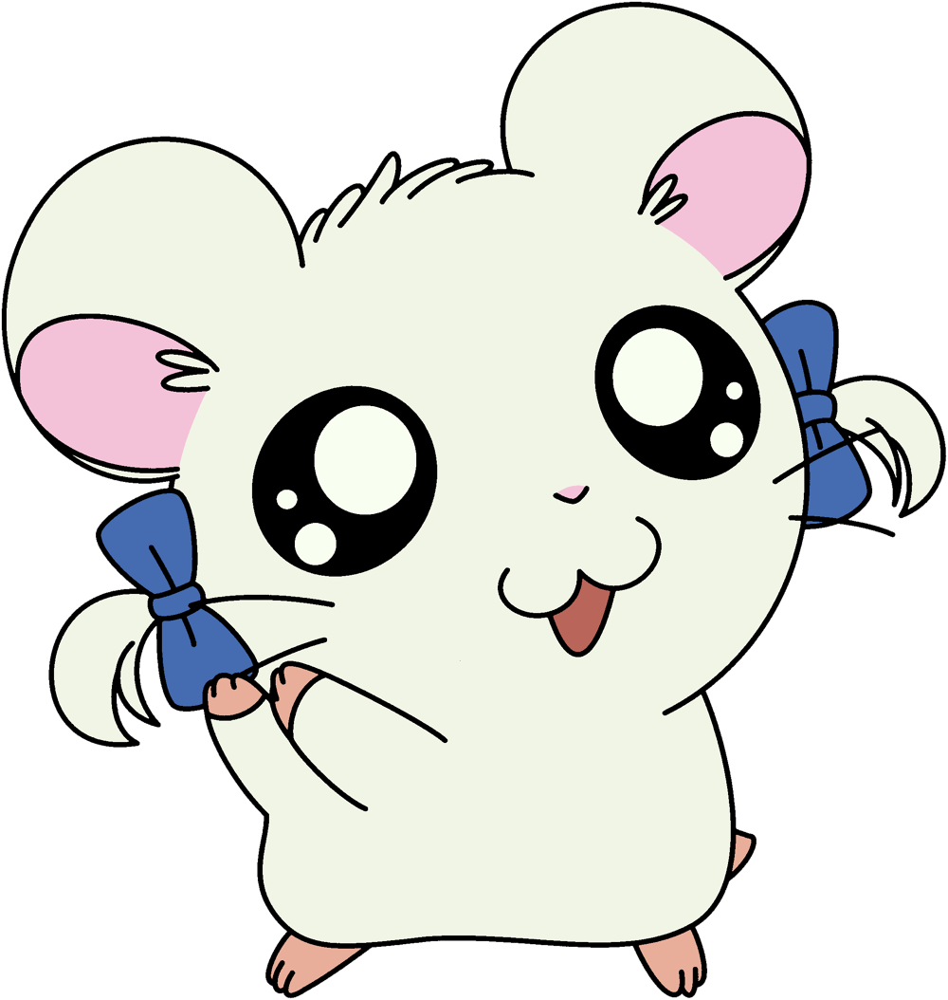É um hamster bastante inteligente que conhece bastantes factos. Quando os Ham-Hams precisam de alguma informação, vão ter com ele. Está apaixonado pela Sandy. Costuma andar sempre com um livro para onde for. A sua dona é a Yume, filha de um bibliotecário.
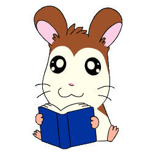É um hamster com uma marca de uns óculos no pêlo, não sendo óculos verdadeiros. É bastante bem educado, cavalheiro e sempre pronto a ajudar os outros. Usa sempre um laço vermelho. É o melhor amigo mas também rival no amor do Howdy (Tureco). Está apaixonado pela Pashmina. O seu dono é o oculista Curtis.
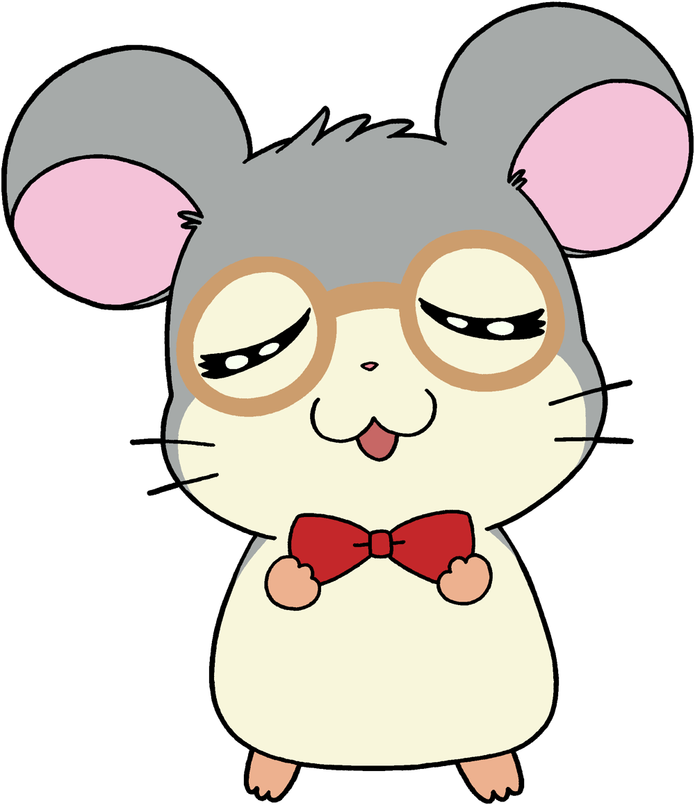Ela é a mais nova dos hamsters. Por ser um bebé ainda não sabe falar. Usa um lençol amarelo como capa. É a melhor amiga da Pashmina. A sua dona é a Kyle (Camilla), a melhor amiga da dona da Pashmina e colega de turma da Laura.
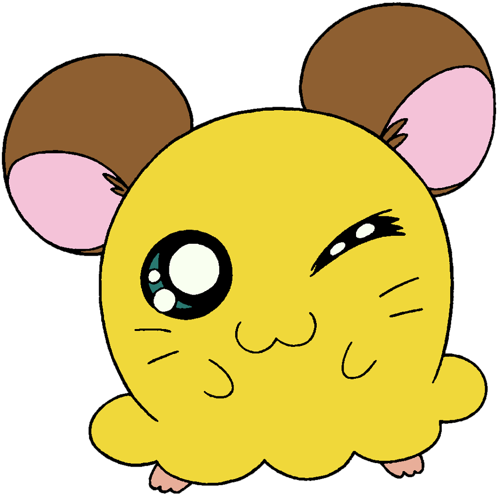Tem esse nome porque é fanático por chapéus de qualquer tipo. Pode usar panelas, frigideiras, bonés, etc. O seu chapéu preferido é uma grande panela vermelha. Os seus donos são o Kip e a Sue.
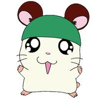Apareceu um dia no Clube dos Ham-Hams e nunca mais de lá saiu. Não tem dono, como o Boss (Chefe), e passa o tempo todo a dormir dentro de uma meia. De vez em quando, durante o sono dá conselhos importantes para os outros Ham-Hams nalguma situação especial.
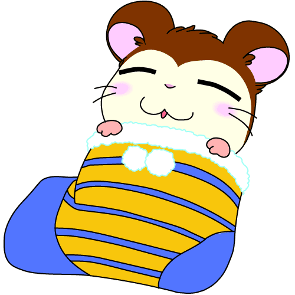Tem esse nome por causa da sua semelhança com um panda, como as manchas em volta dos olhos. É o construtor/faz-tudo dos Ham-Ham. A sua dona é a Mimi.
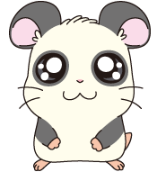É um hamster cantor e poeta. Quando fala é por rimas, sendo bastante enigmático. A maior parte das vezes os outros hamsters não percebem o que ele quer dizer. Costuma vaguear pela localidade, montado num porco com um laço verde, chamado Herbert. Leva sempre uma guitarra vermelha consigo. Não costuma ir em tantas aventuras quanto o resto dos Ham-Hams pois vagueia pela localidade. Troca o nome do Hamtaro constantemente, só tendo acertado uma vez.
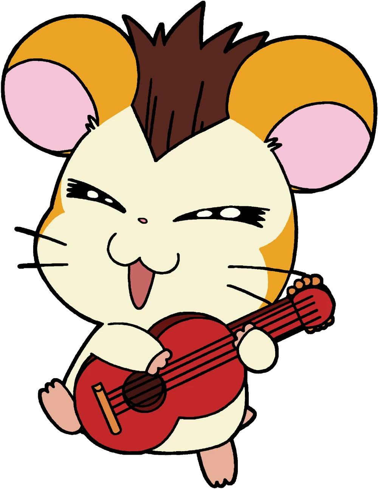É uma hamster que adora cachecóis. Raramente é vista sem um. Usa um cachecol cor-de-rosa, a sua cor preferida. É a melhor amiga da Penélope, sendo muito protectora dela e considerando-a como sua irmã mais nova. Não nota que o Howdy (Tureco) e o Dexter (Mauricinho) gostam dela, não estando apaixonada por ninguém. A sua dona é a June, a melhor amiga da dona da Penélope e colega de turma da Laura.
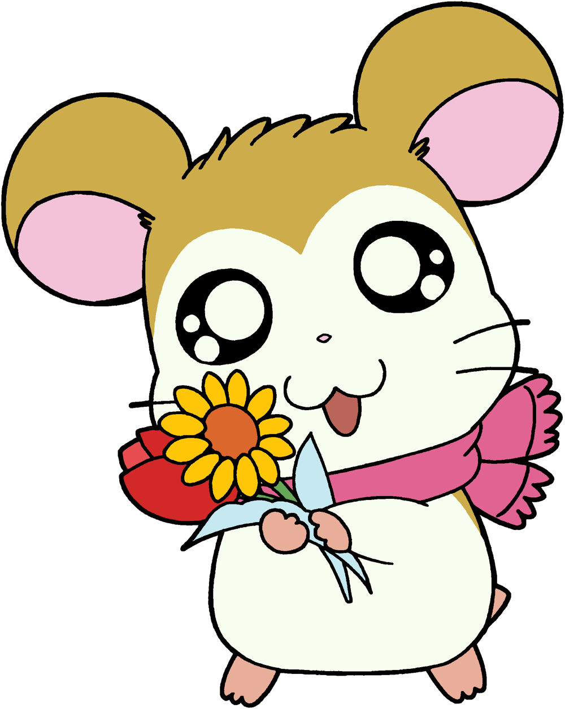É um hamster que adora contar piadas, mas ninguém lhes acha muita graça. É muito trabalhador e asseado, e anda sempre com um avental vermelho. Tem um dom especial para cálculos financeiros. Nunca foi visto com os olhos completamente abertos. É o melhor amigo mas também rival no amor do Dexter (Mauricinho). Está apaixonado pela Pashmina. Na dublagem japonesa ele fala com um dialeto da região japonesa de Kansai, o que foi adaptado na dublagem brasileira como um sotaque caipira. A sua dona é a Goldie, dona de um supermercado.
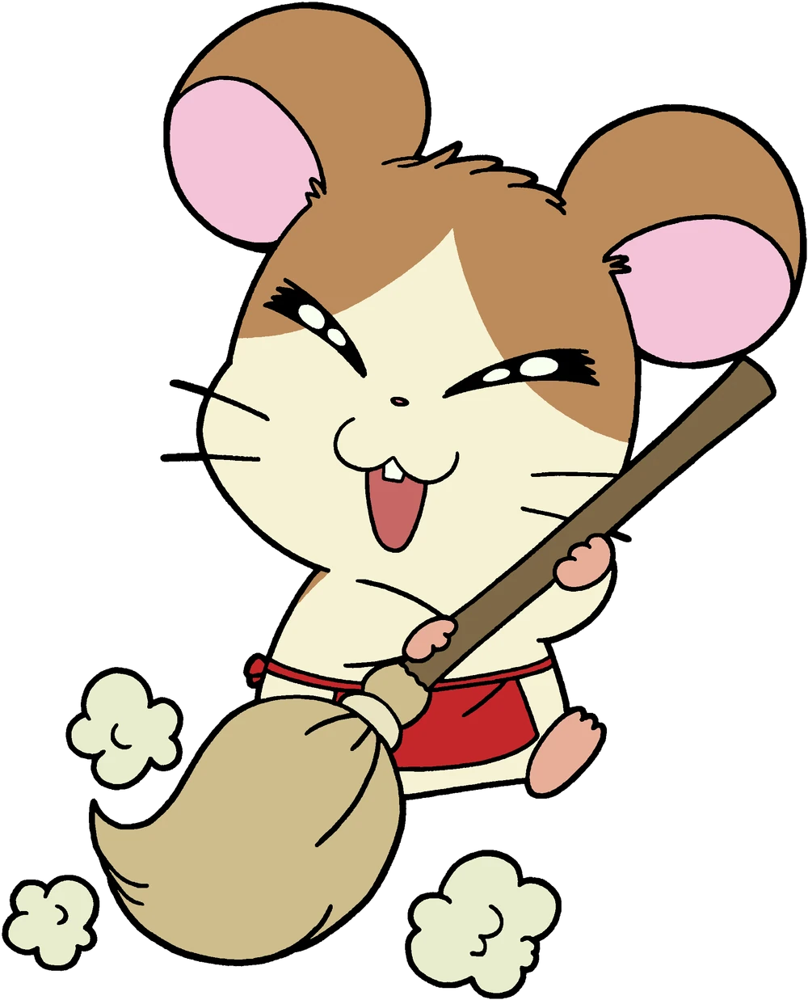É uma hamster atlética que adora desporto. Gosta principalmente de usar a sua fita para ginástica artística. É irmã gémea do Stan e tem de estar sempre de olho nele por causa dos sarilhos que ele causa. Usa um laço vermelho na cauda. Está apaixonada pelo Maxwell. A sua dona é a ginasta rítmica Hillary (Helena).
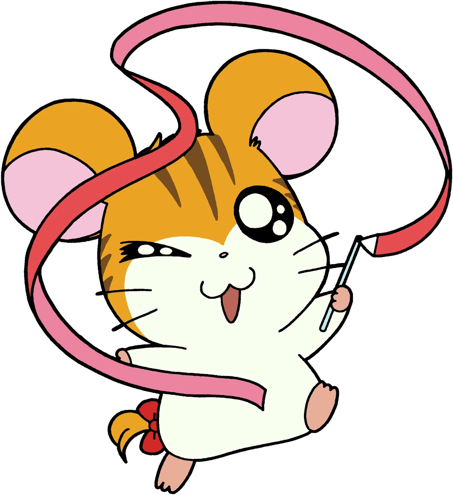É um hamster bastante galanteador, que se mete sempre em sarilhos por se atirar às hamsters fêmeas. É bastante desportista, gostando de praticar desportos radicais e passando bastante tempo no ginásio. Gosta de tocar ritmos latinos nas suas maracas, que leva quase sempre consigo. É irmão gêmeo da Jojô, e seu dono é o desportista Noel.
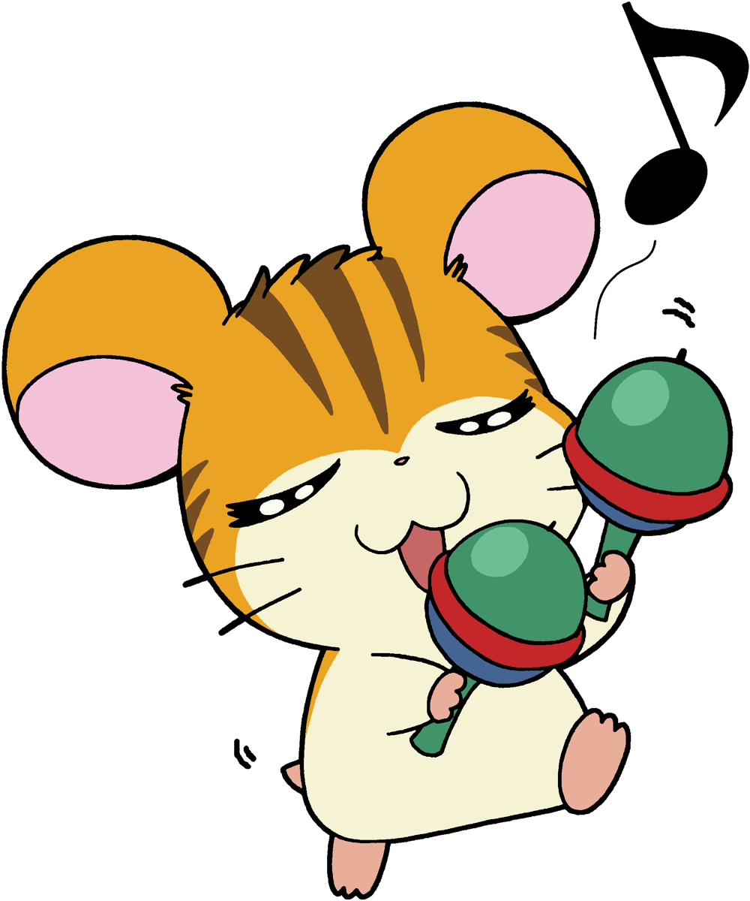Estas personagens fazem parte do Clube dos Ham-Hams. Existem outros personagens, humanos e animais, que não fazem parte do clube mas estão directamente ligados aos hamsters.